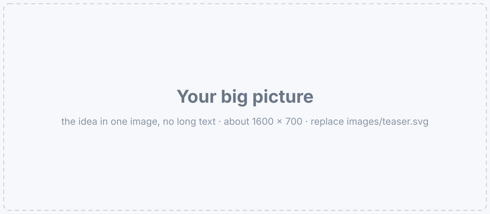
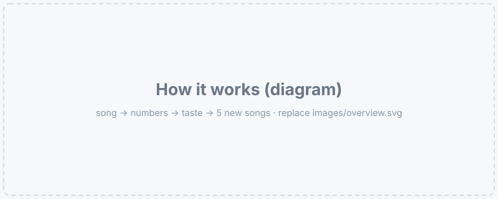
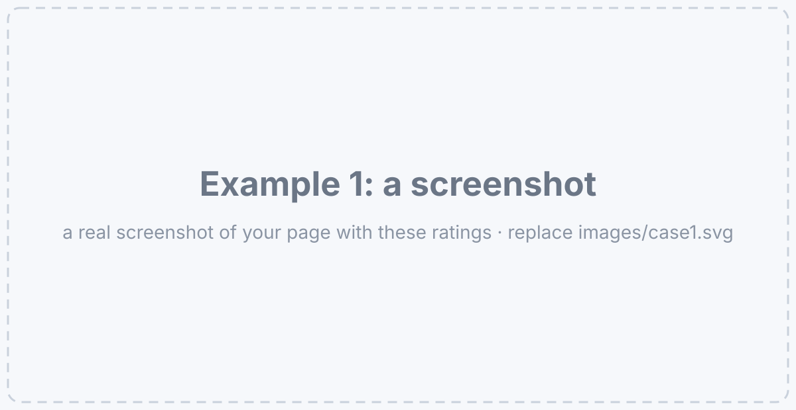
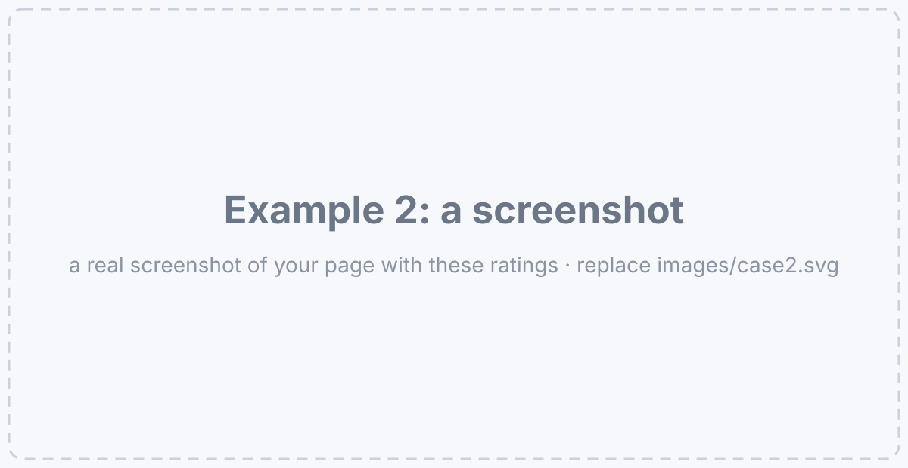
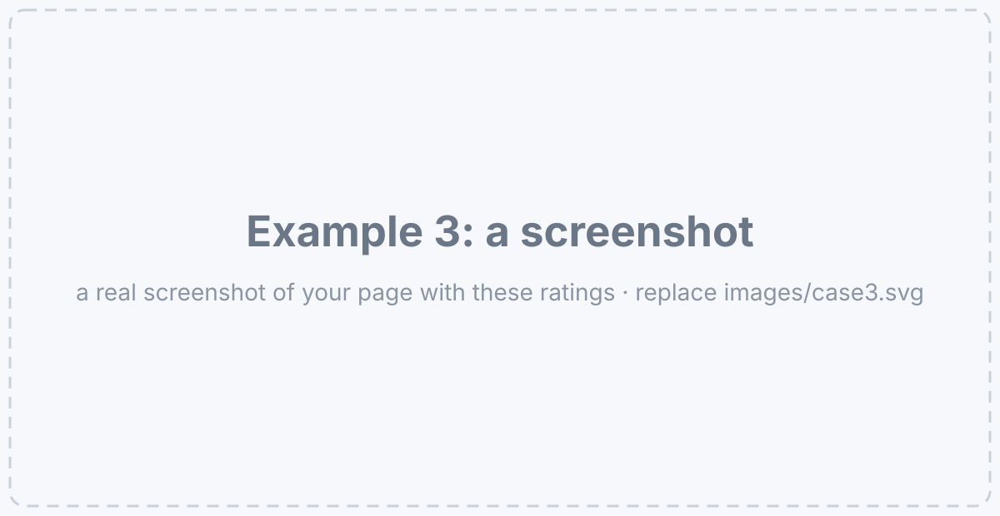

Five songs you rate 5★ in. Five new songs that sound like them out.
FRP 2026, AI Engineering track · ISSAI, Nazarbayev University
Rate what you love, press Get, and see songs that sound like it — with the reason written next to each one.

Music apps recommend from what millions of other people listen to, not from what you hear, so a listener with no history gets popular songs instead of personal ones. With one listener and a small library there is no other people's data to use at all.
I built a taste engine that compares songs by sound: every track becomes a vector with CLAP audio embeddings, your 1–5★ ratings become one taste profile, and the five closest unrated songs come back with the title of the liked song behind each pick. The library holds 319 songs in 20 styles, every one with descriptive tags.
I tested it two ways: two fixed profiles (a rock fan and a K-pop fan) to see if the picks stay in the right style, and three friends who hid three real favourites each in the unseen songs. In the friend test 6 of 9 hidden favourites came back in the top 5, where random picks would find about 0.15 of 9.
[One line: the idea of the method]

[How a song becomes numbers.]
[How your ratings become one taste.]
[How the 5 songs are chosen, and the reason "because you liked".]
[Where the songs come from, in one line. No audio files on this page.]
[Short description]
[Short description]
[Short description]
[Short description]
[Short description]
[Your taste: which styles]
[One line about the data, for example where the style labels come from.]
[One line: we compare with a baseline, so the numbers mean something.]
[What you measure and the baseline.]
[Hide 3 favourites, find them again. The baselines.]
[The model in the page gives the same numbers as Python.]
[One line about what the numbers show.]
| Friend | Found (of 3) | Random from their styles | Random from the library |
|---|---|---|---|
| Friend A | 2/3 | - | 0.05 |
| Friend B | 3/3 | - | 0.05 |
| Friend C | 1/3 | - | 0.05 |
| All | 6/9 | - | 0.15 |
[How each column is computed, in one line.]
[What "found" means.]
[The hard baseline.]
[The easy baseline: 5 × 3 / pool size.]
[One line: the same engine, different tastes.]
[2 lines: which songs were liked, which 5 came out, why it is interesting.]

[2 lines]

[2 lines]

[Rate a few songs, press Get, or do the friend test. Works on a phone.]
[Limitations, honestly: how many friends, 30-second previews, where the style labels come from, …]
[What the numbers do NOT show.]
[One line]
[One line]
[One line: your next idea]
@misc{[yourname]2026tasteengine,
title = {[Project name]: [Subtitle]},
author = {[Your first name]},
year = {2026},
note = {FRP 2026, AI Engineering track, ISSAI, Nazarbayev University},
url = {https://[your-github-name].github.io/[repository]/}
}